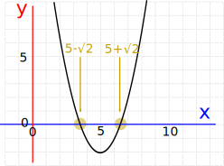

Polynomials: Sums and Products of Roots
Roots of a Polynomial
A "root" (or "zero") is where the polynomial is equal to zero:

Put simply: a root is the x-value where the y-value equals zero.
General Polynomial
If we have a general polynomial like this:
f(x) = axn + bxn-1 + cxn-2 + ... + z
Then:
- Adding the roots gives −b/a
- Multiplying the roots gives:
- z/a (for even degree polynomials like quadratics)
- −z/a (for odd degree polynomials like cubics)
Which can sometimes help us solve things.
How does this magic work? Let's find out ...
Factors
We can take a polynomial, such as:
f(x) = axn + bxn-1 + cxn-2 + ... + z
And then factor it like this:
f(x) = a(x−p)(x−q)(x−r)...
Then p, q, r, etc are the roots (where the polynomial equals zero)
Quadratic
Let's try this with a Quadratic (where the variable's biggest exponent is 2):
ax2 + bx + c
When the roots are p and q, the same quadratic becomes:
a(x−p)(x−q)
Is there a relationship between a,b,c and p,q ?
Let's expand a(x−p)(x−q):
a(x−p)(x−q)
= a( x2 − px − qx + pq )
= ax2 − a(p+q)x + apq
| Quadratic: | ax2 | +bx | +c |
| Expanded Factors: | ax2 | −a(p+q)x | +apq |
We can now see that −a(p+q)x = bx, so:
And apq = c, so:
And we get this result:
- Adding the roots gives −b/a
- Multiplying the roots gives c/a
This can help us answer questions.
Example: What is an equation whose roots are 5 + √2 and 5 − √2
The sum of the roots is (5 + √2) + (5 − √2) = 10
The product of the roots is (5 + √2) (5 − √2) = 25 − 2 = 23
And we want an equation like:
ax2 + bx + c = 0
When a=1 we can work out that:
- Sum of the roots = −b/a = -b
- Product of the roots = c/a = c
Which gives us this result
x2 − (sum of the roots)x + (product of the roots) = 0
The sum of the roots is 10, and product of the roots is 23, so we get:
x2 − 10x + 23 = 0
And here is its plot:

(Question: what happens if we choose a=−1 ?)
Cubic
Now let us look at a Cubic (one degree higher than Quadratic):
ax3 + bx2 + cx + d
As with the Quadratic, let us expand the factors:
a(x−p)(x−q)(x−r)
= ax3 − a(p+q+r)x2 + a(pq+pr+qr)x − a(pqr)
And we get:
| Cubic: | ax3 | +bx2 | +cx | +d |
| Expanded Factors: | ax3 | −a(p+q+r)x2 | +a(pq+pr+qr)x | −apqr |
We can now see that −a(p+q+r)x2 = bx2, so:
And −apqr = d, so:
This is interesting ... we get the same sort of thing:
- Adding the roots gives −b/a (exactly the same as the Quadratic)
- Multiplying the roots gives −d/a (similar to +c/a for the Quadratic)
(We also get pq+pr+qr = c/a, which can itself be useful.)
Higher Polynomials
The same pattern continues with higher polynomials.
In General:
- Adding the roots gives −b/a
- Multiplying the roots gives (where "z" is the constant at the end):
- z/a (for even degree polynomials like quadratics)
- −z/a (for odd degree polynomials like cubics)